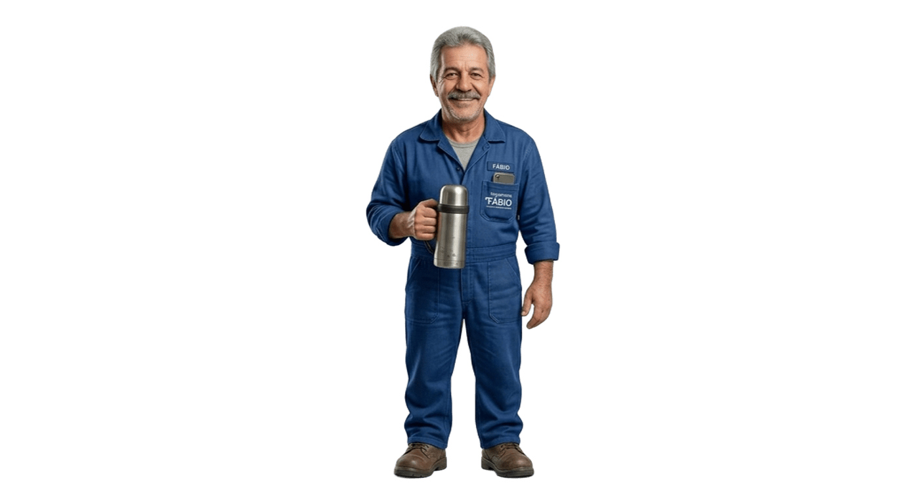

Organização de rota noturna
Rota — o app do Fábio para nunca mais errar o caminho.
Fábio Alves é motorista de transporte universitário noturno. O site organiza os alunos confirmados e ajuda a encontrar o menor caminho até a faculdade.

Persona base
Fábio Alves
Idade52 anos
CidadeEngenheiro Beltrão
EmpregoMotorista de Transporte universitário
SalárioR$ 10.000 / mês
Rotina
Saídas diárias, múltiplas paradas e cálculo mental de rotas durante a madrugada.
Dores
Cansaço extremo, esquece endereços e gasta combustível com voltas desnecessárias.
Objetivo
Terminar a rota rápido, gastar menos combustível e ir dormir sem erros.
Como o site atende a persona
Fluxo simples para escolher o menor caminho
Lista de confirmados
Mostra quem vai e quem não vai para reduzir erro antes da partida.
Ordem de embarque
Organiza os pontos de coleta para reduzir voltas desnecessárias.
Mini game de rota
O jogador encontra o menor caminho para levar ou buscar os alunos dos seus endereços até a faculdade.
Mini game
Rota
Encontrar a menor rota para levar ou buscar os alunos de seus respectivos endereços até a faculdade, reduzindo cansaço e combustível.
Prévia bloqueada até validar a idade.
Interação com input
Mensagem personalizada
Estrutura do sistema
Páginas internas do site
Início
Persona, dor e proposta.
Rotas
Lista de confirmados e ordem sugerida.
Mini game
Página dedicada ao jogo.
Contato
Espaço para feedback e melhorias.